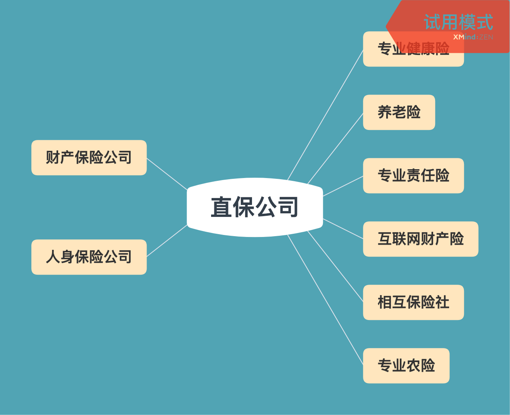

<!DOCTYPE html>
<html>
<head><meta name="generator" content="Hexo 3.9.0">
  <meta charset="utf-8">
  
  <title>保险专业基本功 | 守株阁</title>
  <meta name="viewport" content="width=device-width, initial-scale=1, maximum-scale=1">
  <meta name="description" content="保险行业市场参与者 直保公司（也就是常见的保险公司），如泰康人寿、平安财险。 保险中介（帮直保公司卖保险的机构），如携程保代、慧择经纪、XX银行分行兼业代理。 再保险公司（直保公司将无法独自分摊的风险进行再分摊），如瑞士再保险，中国再保险。 保险公估（帮助保险公司理赔的专业公司），如泛华公估、民太安公估。 保险资管公司（帮助保险公司进行资产管理的公司），如中国人保资产管理。   类目的区别财产险：">
<meta name="keywords" content="保险">
<meta property="og:type" content="article">
<meta property="og:title" content="保险专业基本功">
<meta property="og:url" content="http://yoursite.com/2019/11/08/保险专业基本功/index.html">
<meta property="og:site_name" content="守株阁">
<meta property="og:description" content="保险行业市场参与者 直保公司（也就是常见的保险公司），如泰康人寿、平安财险。 保险中介（帮直保公司卖保险的机构），如携程保代、慧择经纪、XX银行分行兼业代理。 再保险公司（直保公司将无法独自分摊的风险进行再分摊），如瑞士再保险，中国再保险。 保险公估（帮助保险公司理赔的专业公司），如泛华公估、民太安公估。 保险资管公司（帮助保险公司进行资产管理的公司），如中国人保资产管理。   类目的区别财产险：">
<meta property="og:locale" content="zh-Hans">
<meta property="og:image" content="http://yoursite.com/2019/11/08/保险专业基本功/直保公司.png">
<meta property="og:updated_time" content="2019-11-08T12:24:02.816Z">
<meta name="twitter:card" content="summary">
<meta name="twitter:title" content="保险专业基本功">
<meta name="twitter:description" content="保险行业市场参与者 直保公司（也就是常见的保险公司），如泰康人寿、平安财险。 保险中介（帮直保公司卖保险的机构），如携程保代、慧择经纪、XX银行分行兼业代理。 再保险公司（直保公司将无法独自分摊的风险进行再分摊），如瑞士再保险，中国再保险。 保险公估（帮助保险公司理赔的专业公司），如泛华公估、民太安公估。 保险资管公司（帮助保险公司进行资产管理的公司），如中国人保资产管理。   类目的区别财产险：">
<meta name="twitter:image" content="http://yoursite.com/2019/11/08/保险专业基本功/直保公司.png">
  
    <link rel="alternate" href="/atom.xml" title="守株阁" type="application/atom+xml">
  
  
    <link rel="icon" href="/favicon.png">
  
  
  <link rel="stylesheet" href="/css/style.css">
  

<link rel="stylesheet" href="/css/prism.css" type="text/css">
<link rel="stylesheet" href="/css/prism-line-numbers.css" type="text/css"></head>
</html>
<body>
  <div id="container">
    <div id="wrap">
      <header id="header">
  <div id="banner"></div>
  <div id="header-outer" class="outer">
    
    <div id="header-inner" class="inner">
      <nav id="sub-nav">
        
          <a id="nav-rss-link" class="nav-icon" href="/atom.xml" title="RSS Feed"></a>
        
        <a id="nav-search-btn" class="nav-icon" title="搜索"></a>
      </nav>
      <div id="search-form-wrap">
        <form action="//google.com/search" method="get" accept-charset="UTF-8" class="search-form"><input type="search" name="q" class="search-form-input" placeholder="Search"><button type="submit" class="search-form-submit">&#xF002;</button><input type="hidden" name="sitesearch" value="http://yoursite.com"></form>
      </div>
      <nav id="main-nav">
        <a id="main-nav-toggle" class="nav-icon"></a>
        
          <a class="main-nav-link" href="/">首页</a>
        
          <a class="main-nav-link" href="/archives">归档</a>
        
          <a class="main-nav-link" href="/about">关于</a>
        
      </nav>
      
    </div>
    <div id="header-title" class="inner">
      <h1 id="logo-wrap">
        <a href="/" id="logo">守株阁</a>
      </h1>
      
        <h2 id="subtitle-wrap">
          <a href="/" id="subtitle">一切都是守株待兔，如切如磋，如琢如磨。I am just joking.</a>
        </h2>
      
    </div>
  </div>
</header>
      <div class="outer">
        <section id="main"><article id="post-保险专业基本功" class="article article-type-post" itemscope itemprop="blogPost">
  <div class="article-meta">
    <a href="/2019/11/08/保险专业基本功/" class="article-date">
  <time datetime="2019-11-08T12:23:13.000Z" itemprop="datePublished">2019-11-08</time>
</a>
    
  </div>
  <div class="article-inner">
    
    
      <header class="article-header">
        
  
    <h1 class="article-title" itemprop="name">
      保险专业基本功
    </h1>
  

      </header>
    
    <div class="article-entry" itemprop="articleBody">
      
        <!-- Table of Contents -->
        
        <h1 id="保险行业市场参与者"><a href="#保险行业市场参与者" class="headerlink" title="保险行业市场参与者"></a>保险行业市场参与者</h1><ul>
<li>直保公司（也就是常见的保险公司），如泰康人寿、平安财险。</li>
<li>保险中介（帮直保公司卖保险的机构），如携程保代、慧择经纪、XX银行分行兼业代理。</li>
<li>再保险公司（直保公司将无法独自分摊的风险进行再分摊），如瑞士再保险，中国再保险。</li>
<li>保险公估（帮助保险公司理赔的专业公司），如泛华公估、民太安公估。</li>
<li>保险资管公司（帮助保险公司进行资产管理的公司），如中国人保资产管理。</li>
</ul>
<p></p>
<h1 id="类目的区别"><a href="#类目的区别" class="headerlink" title="类目的区别"></a>类目的区别</h1><p>财产险：经营跟财产损失有关的业务，主要是车险。</p>
<p>寿险：经营与人身损失有关的业务，主要是重疾险、健康险及寿险等。</p>
<p>财产险公司及寿险公司均可经营一年期及更短保障期限的健康险及意外险业务，这就是为什么百万医疗虽然是人身相关的保险，但是最早研发推出的是众安在线（一家财产险公司），而支付宝的好医保·长期医疗6年期百万医疗只能由人保健康这类人寿险公司推出。</p>
<h1 id="互联网保险的模式"><a href="#互联网保险的模式" class="headerlink" title="互联网保险的模式"></a>互联网保险的模式</h1><h2 id="什么是场景保险模式"><a href="#什么是场景保险模式" class="headerlink" title="什么是场景保险模式"></a>什么是场景保险模式</h2><p>依靠场景销售保险产品，可以是传统的保险产品定制也可以是全新设计的保险产品。</p>
<p>a) 传统的保险产品定制：以携程为代表，机票搭售航意险，以变现为导向。</p>
<p>b) 全新设计的保险产品：以“准时宝”、“退回运费险”为代表，针对互联网场景特有风险，设计保险产品，并在场景中实现快速销售，以解决“客诉”为导向。</p>
<h2 id="什么是人身类保险模式"><a href="#什么是人身类保险模式" class="headerlink" title="什么是人身类保险模式"></a>什么是人身类保险模式</h2><p>人身保险对于客户而言是一个重要不紧急的事情，很多客户都知道自己需要买一份保险，但是就是迟迟难以决策购买。（主要依靠代理人孜孜教诲。）</p>
<h2 id="什么是互联网模式"><a href="#什么是互联网模式" class="headerlink" title="什么是互联网模式"></a>什么是互联网模式</h2><ul>
<li><p>1.0版本（无场景纯商城模式）：依靠流量寄希望于客户自己购买，最终全线阵亡，转化率实在太低。</p>
</li>
<li><p>2.0版本（赠险模式）：以赠险为工具筛选目标客户，通过多次触达创造让客户思考是否需要保险的场景，辅助于高性价比百万医疗产品，实现客户购买千元内的健康险。</p>
</li>
<li><p>3.0版本（互助模式）：以平台触达为依托，实现客户转化为互助客户（先享受后付费），通过理赔案例创造让客户知道风险无处不在的场景，加强客户购买保险需求，辅助于高性价比百万医疗产品，实现客户购买千元内的健康险。</p>
</li>
<li><p>4.0版本（线上+人工模式）： 以平台触达为依托，以赠险、互助、内容营销等形式，筛选潜在客户，再通过电话或者线上1对1沟通，实现客户购买年缴3000+的长期保险产品。</p>
</li>
</ul>

      
    </div>
    <footer class="article-footer">
      <a data-url="http://yoursite.com/2019/11/08/保险专业基本功/" data-id="ckowhxtf70098a3a1wdco3dps" class="article-share-link">分享</a>
      
      
      
  <ul class="article-tag-list"><li class="article-tag-list-item"><a class="article-tag-list-link" href="/tags/保险/">保险</a></li></ul>

    </footer>
  </div>
  
    
 <script src="/jquery/jquery.min.js"></script>
  <div id="random_posts">
    <h2>推荐文章</h2>
    <div class="random_posts_ul">
      <script>
          var random_count =4
          var site = {BASE_URI:'/'};
          function load_random_posts(obj) {
              var arr=site.posts;
              if (!obj) return;
              // var count = $(obj).attr('data-count') || 6;
              for (var i, tmp, n = arr.length; n; i = Math.floor(Math.random() * n), tmp = arr[--n], arr[n] = arr[i], arr[i] = tmp);
              arr = arr.slice(0, random_count);
              var html = '<ul>';
            
              for(var j=0;j<arr.length;j++){
                var item=arr[j];
                html += '<li><strong>' + 
                item.date + ':&nbsp;&nbsp;<a href="' + (site.BASE_URI+item.uri) + '">' + 
                (item.title || item.uri) + '</a></strong>';
                if(item.excerpt){
                  html +='<div class="post-excerpt">'+item.excerpt+'</div>';
                }
                html +='</li>';
                
              }
              $(obj).html(html + '</ul>');
          }
          $('.random_posts_ul').each(function () {
              var c = this;
              if (!site.posts || !site.posts.length){
                  $.getJSON(site.BASE_URI + 'js/posts.js',function(json){site.posts = json;load_random_posts(c)});
              } 
               else{
                load_random_posts(c);
              }
          });
      </script>
    </div>
  </div>

    
<nav id="article-nav">
  
    <a href="/2019/11/09/Redis-笔记之十一-集群-Cluster/" id="article-nav-newer" class="article-nav-link-wrap">
      <strong class="article-nav-caption">上一篇</strong>
      <div class="article-nav-title">
        
          Redis 笔记之十一-集群 Cluster
        
      </div>
    </a>
  
  
    <a href="/2019/10/30/Redis-笔记之十-哨兵-Sentinel/" id="article-nav-older" class="article-nav-link-wrap">
      <strong class="article-nav-caption">下一篇</strong>
      <div class="article-nav-title">Redis 笔记之十-哨兵 Sentinel</div>
    </a>
  
</nav>

  
</article>
 
     
  <div class="comments" id="comments">
    
     
       
      <div id="cloud-tie-wrapper" class="cloud-tie-wrapper"></div>
    
       
      
      
  </div>
 
  

</section>
           
    <aside id="sidebar">
  
    

  
    
    <div class="widget-wrap">
    
      <div class="widget" id="toc-widget-fixed">
      
        <strong class="toc-title">文章目录</strong>
        <div class="toc-widget-list">
              <ol class="toc"><li class="toc-item toc-level-1"><a class="toc-link" href="#保险行业市场参与者"><span class="toc-number">1.</span> <span class="toc-text">保险行业市场参与者</span></a></li><li class="toc-item toc-level-1"><a class="toc-link" href="#类目的区别"><span class="toc-number">2.</span> <span class="toc-text">类目的区别</span></a></li><li class="toc-item toc-level-1"><a class="toc-link" href="#互联网保险的模式"><span class="toc-number">3.</span> <span class="toc-text">互联网保险的模式</span></a><ol class="toc-child"><li class="toc-item toc-level-2"><a class="toc-link" href="#什么是场景保险模式"><span class="toc-number">3.1.</span> <span class="toc-text">什么是场景保险模式</span></a></li><li class="toc-item toc-level-2"><a class="toc-link" href="#什么是人身类保险模式"><span class="toc-number">3.2.</span> <span class="toc-text">什么是人身类保险模式</span></a></li><li class="toc-item toc-level-2"><a class="toc-link" href="#什么是互联网模式"><span class="toc-number">3.3.</span> <span class="toc-text">什么是互联网模式</span></a></li></ol></li></ol>
          </div>
      </div>
    </div>

  
    

  
    
  
    
  
    

  
    
  
    <!--微信公众号二维码-->


  
</aside>

      </div>
      <footer id="footer">
  
  <div class="outer">
    <div id="footer-left">
      &copy; 2014 - 2021 magicliang&nbsp;|&nbsp;
      主题 <a href="https://github.com/giscafer/hexo-theme-cafe/" target="_blank">Cafe</a>
    </div>
     <div id="footer-right">
      联系方式&nbsp;|&nbsp;magicliang@qq.com
    </div>
  </div>
</footer>
 <script src="/jquery/jquery.min.js"></script>
    </div>
    <nav id="mobile-nav">
  
    <a href="/" class="mobile-nav-link">首页</a>
  
    <a href="/archives" class="mobile-nav-link">归档</a>
  
    <a href="/about" class="mobile-nav-link">关于</a>
  
</nav>
    
<script>
// Elevator script included on the page, already.
window.onload = function() {
  var elevator = new Elevator({
    selector:'.back-to-top-btn',
    element: document.querySelector('.back-to-top-btn'),
    duration: 1000 // milliseconds
  });
}
</script>
      

  
    <script>
      var cloudTieConfig = {
        url: document.location.href, 
        sourceId: "",
        productKey: "e2fb4051c49842688ce669e634bc983f",
        target: "cloud-tie-wrapper"
      };
    </script>
    <script src="https://img1.ws.126.net/f2e/tie/yun/sdk/loader.js"></script>
    

  


<!-- author:forvoid begin -->
<!-- author:forvoid begin -->

<!-- author:forvoid end -->

<!-- author:forvoid end -->


  
    <script type="text/x-mathjax-config">
      MathJax.Hub.Config({
        tex2jax: {
          inlineMath: [ ['$','$'], ["\\(","\\)"]  ],
          processEscapes: true,
          skipTags: ['script', 'noscript', 'style', 'textarea', 'pre', 'code']
        }
      })
    </script>

    <script type="text/x-mathjax-config">
      MathJax.Hub.Queue(function() {
        var all = MathJax.Hub.getAllJax(), i;
        for (i=0; i < all.length; i += 1) {
          all[i].SourceElement().parentNode.className += ' has-jax';
        }
      })
    </script>
    <script type="text/javascript" src="https://cdn.rawgit.com/mathjax/MathJax/2.7.1/MathJax.js?config=TeX-AMS-MML_HTMLorMML"></script>
  


 <script src="/js/is.js"></script>


  <link rel="stylesheet" href="/fancybox/jquery.fancybox.css">
  <script src="/fancybox/jquery.fancybox.pack.js"></script>


<script src="/js/script.js"></script>
<script src="/js/elevator.js"></script>
  </div>
</body>
</html>